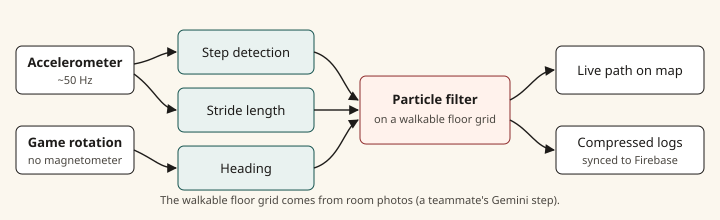
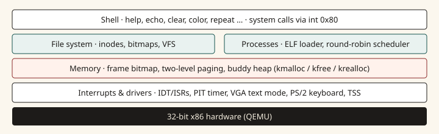

06Boxed kit1 coin
Projects
Selected builds from coursework, each with the problem, my role, the approach and the result.
DeployTeach: indoor movement tracking with smartphone sensors

- Problem
- Studying how instructors move around a classroom usually means cameras, ultra-wideband anchors or wearable tags, and GPS does not work indoors. We wanted to see whether the phone already in an instructor's pocket could reconstruct their path.
- My role
- I led the Android app and its sensor-tracking pipeline. A teammate built the step that turns room photos into a walkable floor grid using Gemini.
- Approach
- Pedestrian dead reckoning built entirely on phone sensors. Steps are detected from the accelerometer with gravity removal, adaptive peak thresholds and an anti-shake guard. Stride length follows a Weinberg-style model, and heading comes from the magnetometer-free game rotation vector, so it is immune to indoor magnetic noise. A map-aided particle filter keeps the path on walkable cells. A foreground service starts on the class schedule, logs compressed sessions and syncs them to Firebase.
- Result
- A working Android prototype that traces relative movement from a start anchor live, with an optional GPS overlay for checking it outdoors. A formal accuracy evaluation is still to be done. The app supports a proposed campus-scale study of instructor movement and learning.
Loop. Campus Event Discovery and Management Platform
- Problem
- Campus events are scattered across group chats and posters, so students miss them and organizers juggle RSVPs and capacity by hand.
- My role
- The team's most active contributor (65 of 117 commits). I built keyword search, the event-edit and audit-log flows, event display cards, and organizer settings and notifications. I fixed five bugs across event approval, RSVP counts and admin moderation, carried out the final integration and tests, and wrote the Javadoc and sprint backlogs.
- Approach
- An Android app on Firebase Auth, Firestore and Storage, built in agile sprints with a pull-request workflow, and tested with JUnit unit tests and Espresso UI tests.
- Result
- A working prototype covering 15 user stories: browsing, search and filters, capacity-aware RSVPs, organizer-student chat, reminders and organizer statistics, demonstrated in a recorded walkthrough. The repository belongs to the course organization and is private.
A 32-bit x86 operating system kernel

- Problem
- Build the core of an operating system from the hardware up, with each layer usable by the next.
- My role
- Implemented the kernel subsystems across the course's four programming projects.
- Approach
- Interrupts and exceptions through an IDT, VGA and PS/2 keyboard drivers, a TTY and
int 0x80system calls with a small shell. A bitmap physical-frame allocator, two-level paging with CR3 switching, and a buddy-system kernel heap. An ELF loader, TSS-based user/kernel transitions, a PIT-driven preemptive round-robin scheduler, and an inode file system with direct and indirect blocks behind a VFS layer. - Result
- A kernel that boots in QEMU into an interactive shell, with memory isolation, multitasking and a persistent file system, debugged with GDB.
Networked systems from sockets up
- Problem
- Implement the mechanisms underneath real network services instead of only using them.
- My role
- Implemented four course projects.
- Approach
- A multithreaded TCP chat server with file transfer. Reliable transport over UDP using Selective Repeat, with checksums, buffering and retransmission. Link-state and distance-vector routing, including count-to-infinity handling. Peer-to-peer file sharing over a distributed hash table with consistent hashing, replication and heartbeat-based failure recovery.
- Result
- Each system was exercised against simulated packet loss, corruption, duplication, reordering and node failures.
Deep learning, implemented from scratch
- Problem
- Understand modern architectures well enough to build and debug them without high-level wrappers.
- My role
- Individual course assignments.
- Approach
- CNNs with Grad-CAM, autoencoders leading to a U-Net for liver-tumor segmentation (LiTS17), GANs, CycleGAN and β-VAEs, a Transformer language model and ViT attention variants, DDPM, DDIM and conditional latent diffusion, and pruning with knowledge distillation.
- Result
- Working implementations with written analysis for each assignment; the course grade was A+.
More on GitHub.